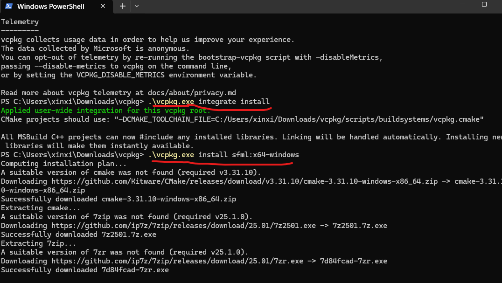
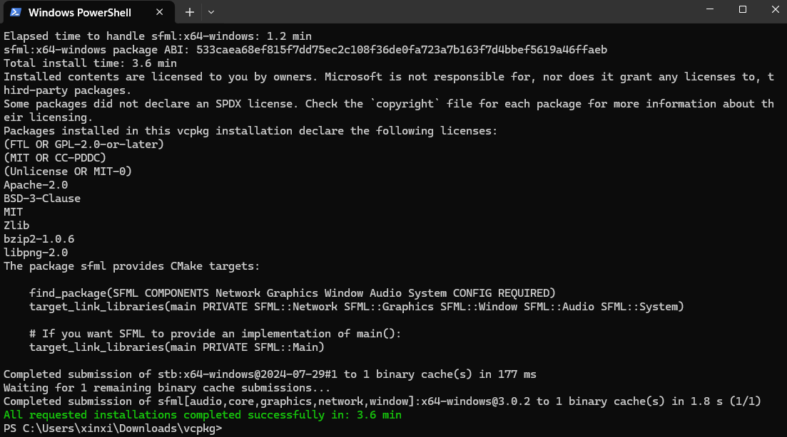

# Review of Game Programming > SFML, SDL, and OpenGL <hr> <br> Xinxing Wu
# Outline [<p class="hover-underline-animation">Basic</p>](#/ch1) [<p class="hover-underline-animation">SFML</p>](#/ch2) [<p class="hover-underline-animation">SDL</p>](#/ch3)
# Outline (Cont.) [<p class="hover-underline-animation">OpenGL</p>](#/ch4) [<p class="hover-underline-animation">Lab</p>](#/ch5)
<p class="definition-rainbow-title">Basic</p>
<div class="definition-com-container"> <div class="definition-com-title">Note</div> <div class="definition-com-shadebox"> - A practical comparison of SFML (Simple and Fast Multimedia Library), SDL (Simple DirectMedia Layer), and OpenGL (Open Graphics Library) </div> </div> <div class="definition-com-container"> <div class="definition-com-title">SFML (Simple and Fast Multimedia Library)</div> <div class="definition-com-shadebox"> - A <spanGREEN>higher-level</spanGREEN> C++ library for making 2D apps/games. - Gives you a <spanGREEN>friendly API</spanGREEN> for: window, input, 2D drawing, audio, fonts, networking. - You “draw shapes/sprites/text” directly with SFML. </div> </div> <div class="definition-com-container"> <div class="definition-com-title">SDL (Simple DirectMedia Layer)</div> <div class="definition-com-shadebox"> - A <spanGREEN>lower-level</spanGREEN> cross-platform library in C (works great in C++). - <spanBYMix>Handles</spanBYMix>: window, input, audio, timing, and it can do 2D rendering (SDL_Renderer) or act as a base for OpenGL/Vulkan. - <spanRED>More “plumbing” than SFML, but more flexible and used widely in industry</spanRED> </div> </div> <div class="definition-com-container"> <div class="definition-com-title">Vulkan and SDL</div> <div class="definition-com-shadebox"> - Vulkan is one of the modern GPU graphics APIs that SDL can work “under” or “next to.” - SDL handles the platform work (windows, input, audio), while Vulkan handles the GPU rendering. </div> </div> <div class="definition-com-container"> <div class="definition-com-title">Vulkan</div> <div class="definition-com-shadebox"> Vulkan is a low-level graphics and compute API, similar to: - Direct3D 12 (Windows) - Metal (Apple) </div> </div> <div class="definition-com-container"> <div class="definition-com-title">Vulkan</div> <div class="definition-com-shadebox"> With Vulkan, you manage almost everything explicitly: - GPU memory allocation - Synchronization (CPU ↔ GPU, GPU ↔ GPU) - Command buffers - Rendering pipelines Nothing is hidden or automatic. </div> </div> <div class="definition-com-container"> <div class="definition-com-title">OpenGL</div> <div class="definition-com-shadebox"> - A graphics API (not a full “game library”). - Only concerned with rendering (GPU pipeline: vertices → shaders → pixels). - Does not provide input/audio/fonts/game loop by itself—you must pair it with something (SDL/GLFW + extra libs). </div> </div> <div class="definition-com-container"> <div class="definition-com-title">GLFW</div> <div class="definition-com-shadebox"> GLFW stands for Graphics Library Framework, a lightweight, multi-platform library for developers to create windows, contexts, and handle input (keyboard, mouse, joystick) for graphics APIs like OpenGL and Vulkan, simplifying tasks that are otherwise complex and OS-specific. </div> </div> <div class="definition-com-container"> <div class="definition-com-title">GPU Pipeline</div> <div class="definition-com-shadebox"> Vertices → Shaders → Pixels Example: Printing a Poster Imagine you are printing a large poster. </div> </div> <div class="definition-com-container"> <div class="definition-com-title">Vertices</div> <div class="definition-com-shadebox"> Vertices = Blueprint / Wireframe Vertices are like the blueprint points of the poster design. - Corner points of images - Edges of shapes - Positions of text boxes 📌 They describe the structure, not the final look. > “These are the corners and outlines of what we want.” </div> </div> <div class="definition-com-container"> <div class="definition-com-title">Shaders</div> <div class="definition-com-shadebox"> Shaders = Graphic Designers + Color Experts Shaders are like graphic designers working on the blueprint. - Decide colors - Add lighting and shadows - Apply textures (photos, patterns) - Decide how each part should look </div> </div> <div class="definition-com-container"> <div class="definition-com-title">Shaders (cont.)</div> <div class="definition-com-shadebox"> There are different specialists: - Vertex shader → adjusts positions (resize, rotate, move) - Fragment shader → decides the color of each tiny spot > “How should this look?” </div> </div> <div class="definition-com-container"> <div class="definition-com-title">Pixels</div> <div class="definition-com-shadebox"> Pixels = Printed Dots on Paper - Pixels are the actual ink dots printed on the poster. - Each pixel has a final color - Millions of them together form the image you see > “This is what ends up on the paper.” </div> </div> <p class='titlep'> </p> > Vertices define shape, shaders define appearance, pixels are the final image. <div class="definition-com-container"> <div class="definition-com-title">Level of abstraction (how much work you do)</div> <div class="definition-com-shadebox"> - <spanGREEN>SFML</spanGREEN>: highest-level → fastest to make a 2D game. - <spanBYMix>SDL</spanBYMix>: mid-level → you build more yourself, but still productive. - <spanRED>OpenGL</spanRED>: lowest-level → maximum control, maximum complexity. </div> </div> <div class="definition-com-container"> <div class="definition-com-title">2D game development</div> <div class="definition-com-shadebox"> SFML - easiest for beginners - Drawing a sprite/text/shape is very straightforward. - Great for teaching core game loop + input + collisions without drowning in setup. </div> </div> <div class="definition-com-container"> <div class="definition-com-title">2D game development</div> <div class="definition-com-shadebox"> SDL - good, but more boilerplate - SDL2 rendering API is fine for 2D, but you’ll write more glue code. - Fonts/images/audio often involve add-on libraries: - SDL_image, SDL_ttf, SDL_mixer (common in practice) </div> </div> <div class="definition-com-container"> <div class="definition-com-title">2D game development</div> <div class="definition-com-shadebox"> OpenGL ⚠️ not fast for beginners to “make a game fast” - Even “draw a textured rectangle” requires: - shader setup, buffers, VAOs/VBOs, coordinate transforms, texture handling - Great for a single “rendering concept” lab, not for the main course tool (unless the course is graphics-focused). </div> </div> <div class="definition-com-container"> <div class="definition-com-title">Performance & control</div> <div class="definition-com-shadebox"> - OpenGL: best control and can reach best performance (if used well). - SDL/SFML: plenty fast for most 2D class projects. - SFML internally can use OpenGL under the hood for many operations. - SDL can either use its renderer or OpenGL directly. In practice: for typical class projects, performance differences are rarely the deciding <spanBYMix>factor—time-to-build and clarity matter more</spanBYMix> </div> </div> <div class="definition-com-container"> <div class="definition-com-title">Portability & ecosystem</div> <div class="definition-com-shadebox"> - SDL: extremely portable and widely used as a base layer (PC, Linux, macOS; historically also used broadly in ports). - SFML: also cross-platform and easy, but smaller ecosystem than SDL. - OpenGL: cross-platform in theory, but real-world quirks exist (driver differences; macOS supports only older core versions). </div> </div> <div class="definition-com-container"> <div class="definition-com-title">Pick SFML when…</div> <div class="definition-com-shadebox"> - You want to build complete playable 2D games quickly - You want fewer dependencies and cleaner C++ code - You want to use: loop, input, sprites, collision, basic UI/HUD (Heads-Up Display), sound </div> </div> <div class="definition-com-container"> <div class="definition-com-title">Pick SDL when…</div> <div class="definition-com-shadebox"> You want a more “engine-like foundation” We might later introduce: OpenGL/Vulkan, more custom pipelines You want a library that’s very common in real-world tooling/ports </div> </div> <div class="definition-com-container"> <div class="definition-com-title">Pick OpenGL when…</div> <div class="definition-com-shadebox"> The learning goal is rendering: - shaders - coordinate systems - GPU pipeline - batching / buffers You don’t mind spending significant time on setup and math You pair it with SDL/GLFW + helper libs </div> </div> <div class="definition-pro-Y-container"> <div class="definition-pro-Y-title">Best combo</div> <div class="definition-pro-Y-shadebox"> - Main tool: SFML (or SDL2) - One optional/extra-credit lab: OpenGL “draw triangle/rectangle + simple shader + explain pipeline” - Don’t require OpenGL for the full game project. </div> </div> <div class="definition-pro-Y-container"> <div class="definition-pro-Y-title">Pixel Inspector</div> <div class="definition-pro-Y-shadebox"> https://kysu.instructure.com/courses/7052/pages/pixel-inspector?module_item_id=398111 </div> </div>
<p class="definition-rainbow-title">SFML</p>
<div class="definition-com-container"> <div class="definition-com-title">Goal</div> <div class="definition-com-shadebox"> - What SFML provides: window + input + 2D drawing + timing - The game loop (process input → update → render) - Drawing shapes and moving them with keyboard + delta time </div> </div> <div class="definition-com-container"> <div class="definition-com-title">Instructor setup (best option: vcpkg)</div> <div class="definition-com-shadebox"> - Install vcpkg (<spanGREEN>Assuming you have installed VS</spanGREEN>) - In a Developer PowerShell <div style="font-size: 1.6em; line-height: 1.5;"> ``` git clone https://github.com/microsoft/vcpkg.git cd vcpkg .\bootstrap-vcpkg.bat .\vcpkg.exe integrate install .\vcpkg.exe install sfml:x64-windows ``` </div> - In Visual Studio: <spanBYMix>create Console App (C++), set platform x64</spanBYMix>. - If “missing DLL” at runtime: copy the SFML .dll files into the same folder as the .exe (or use vcpkg which usually handles runtime deployment better depending on setup). </div> </div> <p></p> <p></p> <div class="definition-com-container"> <div class="definition-com-title">Steps</div> <div class="definition-com-shadebox"> - What SFML is + the game loop + window/events - (<spanRED>Lab 1</spanRED>): “Hello SFML Window + Close” - (<spanRED>Lab 2</spanRED>): “Move a circle with WASD (delta time)” </div> </div> <div class="definition-com-container"> <div class="definition-com-title">WASD</div> <div class="definition-com-shadebox"> - WASD refers to four keys on the keyboard commonly used for movement controls, especially in games. ``` W = move up A = move left S = move down D = move right ``` </div> </div> <div class="definition-com-container"> <div class="definition-com-title">Lab 1 (in class): Hello Window + Events</div> <div class="definition-com-shadebox"> <div style="font-size: 1.4em; line-height: 1.5;"> Goal: Create a window; close it properly. ``` #include <SFML/Graphics.hpp> #include <optional> int main() { sf::RenderWindow window(sf::VideoMode({800u, 600u}), "SFML Lab 1"); window.setFramerateLimit(60); while (window.isOpen()) { // SFML 3: pollEvent() returns std::optional<sf::Event> while (const std::optional<sf::Event> event = window.pollEvent()) { if (event->is<sf::Event::Closed>()) window.close(); } window.clear(); // clears to black by default window.display(); // shows the frame } return 0; } ``` </div> </div> </div> <div class="definition-com-container"> <div class="definition-com-title">Lab 2 (in class): Move a Circle with Delta Time</div> <div class="definition-com-shadebox"> Goal: Smooth movement independent of FPS. ``` #include <SFML/Graphics.hpp> #include <optional> int main() { sf::RenderWindow window(sf::VideoMode({800u, 600u}), "SFML Lab 2"); window.setFramerateLimit(60); sf::CircleShape player(25.f); player.setPosition({100.f, 100.f}); const float speed = 250.f; // pixels per second sf::Clock clock; while (window.isOpen()) { // SFML 3 event loop (pollEvent returns std::optional) while (const std::optional<sf::Event> event = window.pollEvent()) { if (event->is<sf::Event::Closed>()) window.close(); // SFML 3 key pressed event uses getIf<> if (const auto* keyPressed = event->getIf<sf::Event::KeyPressed>()) { if (keyPressed->scancode == sf::Keyboard::Scan::Escape) window.close(); } } const float dt = clock.restart().asSeconds(); sf::Vector2f move{0.f, 0.f}; // Real-time input (smooth movement): use scancodes (SFML 3 tutorial recommendation) if (sf::Keyboard::isKeyPressed(sf::Keyboard::Scan::W)) move.y -= speed * dt; if (sf::Keyboard::isKeyPressed(sf::Keyboard::Scan::S)) move.y += speed * dt; if (sf::Keyboard::isKeyPressed(sf::Keyboard::Scan::A)) move.x -= speed * dt; if (sf::Keyboard::isKeyPressed(sf::Keyboard::Scan::D)) move.x += speed * dt; player.move(move); window.clear(); window.draw(player); window.display(); } return 0; } ``` </div> </div> <div class="definition-com-container"> <div class="definition-com-title">Extending?</div> <div class="definition-com-shadebox"> ``` if (sf::Keyboard::isKeyPressed(sf::Keyboard::Scan::Up)) move.y -= speed * dt; if (sf::Keyboard::isKeyPressed(sf::Keyboard::Scan::Down)) move.y += speed * dt; if (sf::Keyboard::isKeyPressed(sf::Keyboard::Scan::Left)) move.x -= speed * dt; if (sf::Keyboard::isKeyPressed(sf::Keyboard::Scan::Right)) move.x += speed * dt; ``` </div> </div> <div class="definition-com-container"> <div class="definition-com-title">Extending?</div> <div class="definition-com-shadebox"> player.setFillColor(sf::Color(255, 0, 0)); </div> </div> <div class="definition-com-container"> <div class="definition-com-title">Extending?</div> <div class="definition-com-shadebox"> Upgrades - Keep the circle inside the window bounds - Add a second “enemy” circle that moves automatically </div> </div> <div class="definition-com-container"> <div class="definition-com-title">Note</div> <div class="definition-com-shadebox"> - std::clamp means “force a value to stay within a range.” ``` std::clamp(value, min, max) ``` - If value < min → result = min - If value > max → result = max - Otherwise → result = value </div> </div> <div class="definition-com-container"> <div class="definition-com-title">Examples</div> <div class="definition-com-shadebox"> ``` std::clamp(5, 0, 10); // 5 std::clamp(-3, 0, 10); // 0 std::clamp(20, 0, 10); // 10 ``` </div> </div> <div class="definition-com-container"> <div class="definition-com-title">Program 1</div> <div class="definition-com-shadebox"> Keep the circle inside the window bounds ``` #include <SFML/Graphics.hpp> #include <optional> #include <algorithm> // std::clamp int main() { const unsigned int W = 800; const unsigned int H = 600; sf::RenderWindow window(sf::VideoMode({ W, H }), "SFML Lab 2 (Clamp)"); window.setFramerateLimit(60); sf::CircleShape player(25.f); player.setFillColor(sf::Color::Green); player.setPosition({ 100.f, 100.f }); const float speed = 250.f; // pixels per second sf::Clock clock; while (window.isOpen()) { // SFML 3 events while (const std::optional<sf::Event> event = window.pollEvent()) { if (event->is<sf::Event::Closed>()) window.close(); if (const auto* keyPressed = event->getIf<sf::Event::KeyPressed>()) { if (keyPressed->scancode == sf::Keyboard::Scan::Escape) window.close(); } } const float dt = clock.restart().asSeconds(); // movement (WASD) sf::Vector2f move{ 0.f, 0.f }; if (sf::Keyboard::isKeyPressed(sf::Keyboard::Scan::W)) move.y -= speed * dt; if (sf::Keyboard::isKeyPressed(sf::Keyboard::Scan::S)) move.y += speed * dt; if (sf::Keyboard::isKeyPressed(sf::Keyboard::Scan::A)) move.x -= speed * dt; if (sf::Keyboard::isKeyPressed(sf::Keyboard::Scan::D)) move.x += speed * dt; player.move(move); // ----- Clamp inside window ----- const float r = player.getRadius(); sf::Vector2f p = player.getPosition(); // top-left of circle bounds p.x = std::clamp(p.x, 0.f, static_cast<float>(W) - 2.f * r); p.y = std::clamp(p.y, 0.f, static_cast<float>(H) - 2.f * r); player.setPosition(p); // ------------------------------- window.clear(); window.draw(player); window.display(); } return 0; } ``` </div> </div> <div class="definition-com-container"> <div class="definition-com-title">Program 1</div> <div class="definition-com-shadebox"> - Keep the circle inside the window bounds - Much clearer way ``` #include <SFML/Graphics.hpp> #include <optional> #include <algorithm> // std::clamp int main() { const unsigned int W = 800; const unsigned int H = 600; sf::RenderWindow window(sf::VideoMode({ W, H }), "SFML Lab 2 - Keep Ball Inside"); window.setFramerateLimit(60); const float radius = 25.f; sf::CircleShape player(radius); player.setFillColor(sf::Color::Green); player.setPosition({ 100.f, 100.f }); const float speed = 250.f; // pixels per second sf::Clock clock; while (window.isOpen()) { // SFML 3 events while (const std::optional<sf::Event> event = window.pollEvent()) { if (event->is<sf::Event::Closed>()) window.close(); if (const auto* keyPressed = event->getIf<sf::Event::KeyPressed>()) { if (keyPressed->scancode == sf::Keyboard::Scan::Escape) window.close(); } } const float dt = clock.restart().asSeconds(); // Movement (arrow keys) sf::Vector2f move{ 0.f, 0.f }; if (sf::Keyboard::isKeyPressed(sf::Keyboard::Scan::Up)) move.y -= speed * dt; if (sf::Keyboard::isKeyPressed(sf::Keyboard::Scan::Down)) move.y += speed * dt; if (sf::Keyboard::isKeyPressed(sf::Keyboard::Scan::Left)) move.x -= speed * dt; if (sf::Keyboard::isKeyPressed(sf::Keyboard::Scan::Right)) move.x += speed * dt; player.move(move); // ---- Keep the circle fully inside the window ---- sf::Vector2f pos = player.getPosition(); // top-left of circle bounds const float maxX = static_cast<float>(W) - 2.f * radius; const float maxY = static_cast<float>(H) - 2.f * radius; pos.x = std::clamp(pos.x, 0.f, maxX); pos.y = std::clamp(pos.y, 0.f, maxY); player.setPosition(pos); // ------------------------------------------------- window.clear(sf::Color(20, 20, 30)); // optional background color window.draw(player); window.display(); } return 0; } ``` </div> </div> <div class="definition-com-container"> <div class="definition-com-title">Program 2</div> <div class="definition-com-shadebox"> Final upgrades: Clamp player + auto-moving enemy circle ``` #include <SFML/Graphics.hpp> #include <optional> #include <algorithm> // std::clamp #include <cmath> // std::abs int main() { const unsigned int W = 800; const unsigned int H = 600; sf::RenderWindow window(sf::VideoMode({W, H}), "SFML Lab 2 (Clamp + Enemy)"); window.setFramerateLimit(60); // Player (controlled) sf::CircleShape player(25.f); player.setFillColor(sf::Color::Green); player.setPosition({100.f, 100.f}); const float speed = 250.f; // pixels per second // Enemy (auto moving) sf::CircleShape enemy(20.f); enemy.setFillColor(sf::Color::Red); enemy.setPosition({500.f, 300.f}); sf::Vector2f enemyVel{180.f, 140.f}; // pixels per second sf::Clock clock; while (window.isOpen()) { // SFML 3 events while (const std::optional<sf::Event> event = window.pollEvent()) { if (event->is<sf::Event::Closed>()) window.close(); if (const auto* keyPressed = event->getIf<sf::Event::KeyPressed>()) { if (keyPressed->scancode == sf::Keyboard::Scan::Escape) window.close(); } } const float dt = clock.restart().asSeconds(); // ----------------------- // Player movement (WASD) // ----------------------- sf::Vector2f move{0.f, 0.f}; if (sf::Keyboard::isKeyPressed(sf::Keyboard::Scan::W)) move.y -= speed * dt; if (sf::Keyboard::isKeyPressed(sf::Keyboard::Scan::S)) move.y += speed * dt; if (sf::Keyboard::isKeyPressed(sf::Keyboard::Scan::A)) move.x -= speed * dt; if (sf::Keyboard::isKeyPressed(sf::Keyboard::Scan::D)) move.x += speed * dt; player.move(move); // Clamp player inside window { const float r = player.getRadius(); sf::Vector2f p = player.getPosition(); // top-left p.x = std::clamp(p.x, 0.f, static_cast<float>(W) - 2.f * r); p.y = std::clamp(p.y, 0.f, static_cast<float>(H) - 2.f * r); player.setPosition(p); } // ----------------------- // Enemy auto movement + bounce // ----------------------- enemy.move(enemyVel * dt); { const float r = enemy.getRadius(); sf::Vector2f e = enemy.getPosition(); // top-left // bounce X if (e.x <= 0.f) { e.x = 0.f; enemyVel.x = std::abs(enemyVel.x); } else if (e.x >= static_cast<float>(W) - 2.f * r) { e.x = static_cast<float>(W) - 2.f * r; enemyVel.x = -std::abs(enemyVel.x); } // bounce Y if (e.y <= 0.f) { e.y = 0.f; enemyVel.y = std::abs(enemyVel.y); } else if (e.y >= static_cast<float>(H) - 2.f * r) { e.y = static_cast<float>(H) - 2.f * r; enemyVel.y = -std::abs(enemyVel.y); } enemy.setPosition(e); } window.clear(); window.draw(player); window.draw(enemy); window.display(); } return 0; } ``` </div> </div>
<p class="definition-rainbow-title">SDL</p>
<div class="definition-com-container"> <div class="definition-com-title">SDL</div> <div class="definition-com-shadebox"> Instructor setup (vcpkg recommended) ``` .\vcpkg.exe install sdl2:x64-windows ``` - In Visual Studio use x64. (With vcpkg integration, includes/libs are discovered automatically.) </div> </div>
<p class="definition-rainbow-title">OpenGL</p>
<div class="definition-com-container"> <div class="definition-com-title">OpenGL</div> <div class="definition-com-shadebox"> OpenGL is not a full game library. It’s a graphics API. You still need a window/input library. For Visual Studio, the clean beginner combo is: - GLFW: creates window + OpenGL context + input - GLAD: loads OpenGL function pointers </div> </div> <div class="definition-com-container"> <div class="definition-com-title">vcpkg</div> <div class="definition-com-shadebox"> ``` .\vcpkg.exe install glfw3:x64-windows glad:x64-windows ``` - Windows also uses opengl32.lib automatically via the toolchain </div> </div>
<p class="definition-rainbow-title">Lab</p>
<div class="definition-com-container"> <div class="definition-com-title">Lab</div> <div class="definition-com-shadebox"> Project: “Tag Game” (Clamp + Enemy + Collision + Score) - A green player circle moves with WASD - A red enemy circle moves automatically and bounces - The player is kept inside the window - If the player touches the enemy: - The player resets to the start position - The score increases by 1 - The score is shown in the window title (so no font file needed) </div> </div> <div class="definition-com-container"> <div class="definition-com-title">Step 0</div> <div class="definition-com-shadebox"> Create the SFML 3 window + game loop - Key idea: game loop = handle events → update → draw. </div> </div> <div class="definition-com-container"> <div class="definition-com-title">Step 1</div> <div class="definition-com-shadebox"> Player movement with delta time We use: - speed = pixels per second - dt = seconds since last frame - movement per frame = speed * dt </div> </div> <div class="definition-com-container"> <div class="definition-com-title">Step 2</div> <div class="definition-com-shadebox"> Keep player inside the window (clamp) Player circle has radius r. Its bounding box is 2r × 2r. So valid range for its top-left position is: - x from 0 to W - 2r - y from 0 to H - 2r We use std::clamp. </div> </div> <div class="definition-com-container"> <div class="definition-com-title">Step 3</div> <div class="definition-com-shadebox"> Enemy circle moves automatically + bounces Enemy has velocity enemyVel in pixels/sec. Each frame: - enemy.move(enemyVel * dt) Bounce logic: - If it hits a wall, flip the sign of that velocity component. </div> </div> <div class="definition-com-container"> <div class="definition-com-title">Step 4</div> <div class="definition-com-shadebox"> Collision detection (touching circles) Two circles touch if distance between centers ≤ sum of radii: $$ \text{touching} \iff (dx^2 + dy^2) \le (r_1 + r_2)^2 $$ We compute it without sqrt (faster + simpler). </div> </div> <div class="definition-com-container"> <div class="definition-com-title">Step 5</div> <div class="definition-com-shadebox"> On collision: reset + score++ - score++ - player.setPosition(startPos) - update window title: "Score: X" </div> </div> <div id="shadebox"> ### An Answer <hr style="border: none; border-top: 1.5px solid cyan;"> ``` #include <SFML/Graphics.hpp> #include <optional> #include <algorithm> // std::clamp #include <cmath> // std::abs #include <string> // std::to_string // Helper: circle-circle collision (touching) bool circlesTouch(const sf::CircleShape& a, const sf::CircleShape& b) { // CircleShape position is top-left of its bounding box const float ar = a.getRadius(); const float br = b.getRadius(); const sf::Vector2f ac = a.getPosition() + sf::Vector2f{ ar, ar }; // center const sf::Vector2f bc = b.getPosition() + sf::Vector2f{ br, br }; // center const float dx = ac.x - bc.x; const float dy = ac.y - bc.y; const float sumR = ar + br; return (dx * dx + dy * dy) <= (sumR * sumR); } int main() { // ----------------------- // Window setup // ----------------------- const unsigned int W = 800; const unsigned int H = 600; sf::RenderWindow window(sf::VideoMode({ W, H }), "Tag Game - Score: 0"); window.setFramerateLimit(60); // ----------------------- // Player setup // ----------------------- sf::CircleShape player(25.f); player.setFillColor(sf::Color::Green); const sf::Vector2f playerStartPos{ 100.f, 100.f }; player.setPosition(playerStartPos); const float speed = 250.f; // pixels per second // ----------------------- // Enemy setup // ----------------------- sf::CircleShape enemy(20.f); enemy.setFillColor(sf::Color::Red); enemy.setPosition({ 500.f, 300.f }); sf::Vector2f enemyVel{ 180.f, 140.f }; // pixels per second // ----------------------- // Score // ----------------------- int score = 0; // ----------------------- // Time // ----------------------- sf::Clock clock; while (window.isOpen()) { // ----------------------- // Events (SFML 3) // ----------------------- while (const std::optional<sf::Event> event = window.pollEvent()) { if (event->is<sf::Event::Closed>()) window.close(); if (const auto* keyPressed = event->getIf<sf::Event::KeyPressed>()) { if (keyPressed->scancode == sf::Keyboard::Scan::Escape) window.close(); } } // ----------------------- // Delta time // ----------------------- const float dt = clock.restart().asSeconds(); // ----------------------- // Player movement (WASD) // ----------------------- sf::Vector2f move{ 0.f, 0.f }; if (sf::Keyboard::isKeyPressed(sf::Keyboard::Scan::W)) move.y -= speed * dt; if (sf::Keyboard::isKeyPressed(sf::Keyboard::Scan::S)) move.y += speed * dt; if (sf::Keyboard::isKeyPressed(sf::Keyboard::Scan::A)) move.x -= speed * dt; if (sf::Keyboard::isKeyPressed(sf::Keyboard::Scan::D)) move.x += speed * dt; player.move(move); // ----------------------- // Clamp player inside window // ----------------------- { const float r = player.getRadius(); sf::Vector2f p = player.getPosition(); // top-left p.x = std::clamp(p.x, 0.f, static_cast<float>(W) - 2.f * r); p.y = std::clamp(p.y, 0.f, static_cast<float>(H) - 2.f * r); player.setPosition(p); } // ----------------------- // Enemy movement + bounce // ----------------------- enemy.move(enemyVel * dt); { const float r = enemy.getRadius(); sf::Vector2f e = enemy.getPosition(); // top-left // bounce X if (e.x <= 0.f) { e.x = 0.f; enemyVel.x = std::abs(enemyVel.x); } else if (e.x >= static_cast<float>(W) - 2.f * r) { e.x = static_cast<float>(W) - 2.f * r; enemyVel.x = -std::abs(enemyVel.x); } // bounce Y if (e.y <= 0.f) { e.y = 0.f; enemyVel.y = std::abs(enemyVel.y); } else if (e.y >= static_cast<float>(H) - 2.f * r) { e.y = static_cast<float>(H) - 2.f * r; enemyVel.y = -std::abs(enemyVel.y); } enemy.setPosition(e); } // ----------------------- // Collision: player touches enemy // ----------------------- if (circlesTouch(player, enemy)) { score += 1; // reset player player.setPosition(playerStartPos); // update title (easy "HUD" without fonts) window.setTitle("Tag Game - Score: " + std::to_string(score)); } // ----------------------- // Draw // ----------------------- window.clear(); window.draw(player); window.draw(enemy); window.display(); } return 0; } ``` </div> <div class="definition-com-container"> <div class="definition-com-title">Assignment Lab 1 — Bouncing Ball + Score</div> <div class="definition-com-shadebox"> <div style="width: 800px;"></div> Goal - Make a ball (circle) that: - Moves automatically - Bounces off the window edges - Score increases by 1 each time it hits a wall - Press Space to pause/resume - Press Esc to quit </div> </div> <div class="definition-com-container"> <div class="definition-com-title">Assignment Lab 1 — Bouncing Ball + Score</div> <div class="definition-com-shadebox"> - main.cpp - screenshot or 10-second screen recording showing bounces + score increasing </div> </div> <div class="definition-com-container"> <div class="definition-com-title">Step 1</div> <div class="definition-com-shadebox"> Create a window + game loop. A game loop repeats: - handle events - update positions - draw frame </div> </div> <div class="definition-com-container"> <div class="definition-com-title">Step 2</div> <div class="definition-com-shadebox"> Create a ball - Use sf::CircleShape(radius) and set position. </div> </div> <div class="definition-com-container"> <div class="definition-com-title">Step 3</div> <div class="definition-com-shadebox"> Give the ball a velocity Velocity is “pixels per second”, like: - vx = 220 - vy = 160 </div> </div> <div class="definition-com-container"> <div class="definition-com-title">Step 4</div> <div class="definition-com-shadebox"> Use delta time (dt) Each frame: - position += velocity * dt This makes speed consistent even if FPS changes. </div> </div> <div class="definition-com-container"> <div class="definition-com-title">Step 5</div> <div class="definition-com-shadebox"> Bounce + score - If ball hits left/right wall → flip vx sign and score++ - If ball hits top/bottom wall → flip vy sign and score++ </div> </div> <div class="definition-com-container"> <div class="definition-com-title">Step 6</div> <div class="definition-com-shadebox"> Pause/Resume with Space Use a boolean paused. - Space toggles it. - If paused, do not move the ball. </div> </div> <div id="shadebox"> ### An Answer <hr style="border: none; border-top: 1.5px solid cyan;"> ``` #include <SFML/Graphics.hpp> #include <optional> #include <cmath> // std::abs #include <string> // std::to_string int main() { // ------------------------- // Window setup // ------------------------- const unsigned int W = 800; const unsigned int H = 600; sf::RenderWindow window(sf::VideoMode({W, H}), "Bouncing Ball - Score: 0"); window.setFramerateLimit(60); // ------------------------- // Ball setup // ------------------------- const float radius = 20.f; sf::CircleShape ball(radius); ball.setFillColor(sf::Color::Cyan); ball.setPosition({100.f, 100.f}); // top-left of ball's bounding box // Velocity in pixels per second (how fast it moves) sf::Vector2f vel{220.f, 160.f}; // ------------------------- // Score + pause // ------------------------- int score = 0; bool paused = false; // Time sf::Clock clock; while (window.isOpen()) { // ------------------------- // Events (SFML 3) // ------------------------- while (const std::optional<sf::Event> event = window.pollEvent()) { if (event->is<sf::Event::Closed>()) window.close(); if (const auto* keyPressed = event->getIf<sf::Event::KeyPressed>()) { // ESC quits if (keyPressed->scancode == sf::Keyboard::Scan::Escape) window.close(); // SPACE toggles pause if (keyPressed->scancode == sf::Keyboard::Scan::Space) paused = !paused; } } // ------------------------- // Delta time // ------------------------- const float dt = clock.restart().asSeconds(); // ------------------------- // Update (move + bounce) // ------------------------- if (!paused) { // Move ball ball.move(vel * dt); sf::Vector2f p = ball.getPosition(); // top-left const float diameter = 2.f * radius; bool bounced = false; // Left wall if (p.x <= 0.f) { p.x = 0.f; vel.x = std::abs(vel.x); // force right direction bounced = true; } // Right wall else if (p.x >= static_cast<float>(W) - diameter) { p.x = static_cast<float>(W) - diameter; vel.x = -std::abs(vel.x); // force left direction bounced = true; } // Top wall if (p.y <= 0.f) { p.y = 0.f; vel.y = std::abs(vel.y); // force down direction bounced = true; } // Bottom wall else if (p.y >= static_cast<float>(H) - diameter) { p.y = static_cast<float>(H) - diameter; vel.y = -std::abs(vel.y); // force up direction bounced = true; } // Apply corrected position (important!) ball.setPosition(p); // Update score and title if bounced if (bounced) { score += 1; std::string title = "Bouncing Ball - Score: " + std::to_string(score); if (paused) title += " (Paused)"; window.setTitle(title); } } else { // optional: show paused in title (only once is fine, but this is simple) window.setTitle("Bouncing Ball - Score: " + std::to_string(score) + " (Paused)"); } // ------------------------- // Draw // ------------------------- window.clear(); window.draw(ball); window.display(); } return 0; } ``` </div>